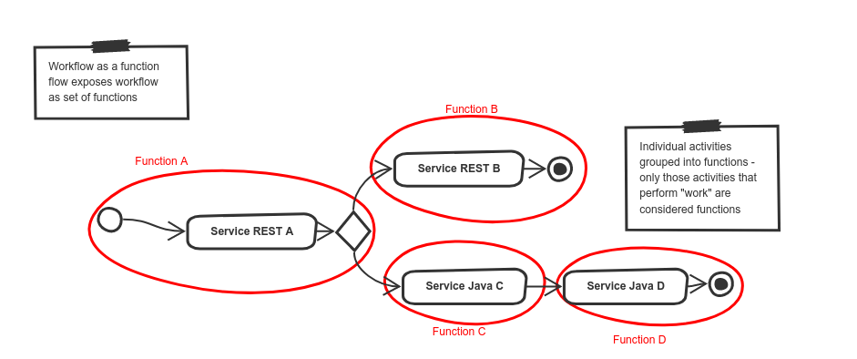
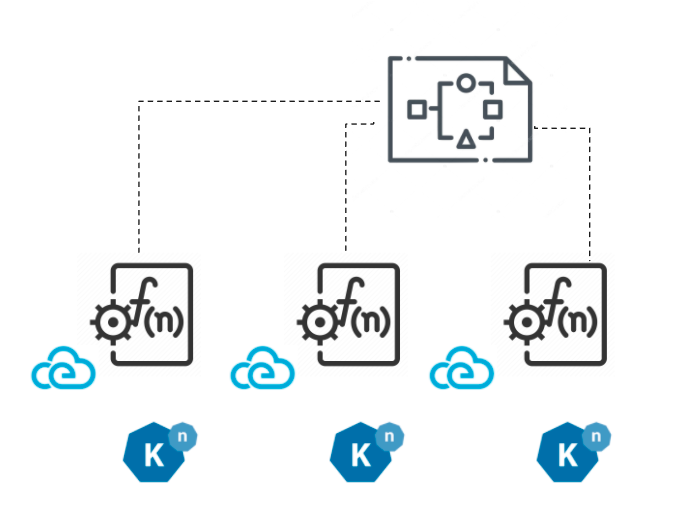
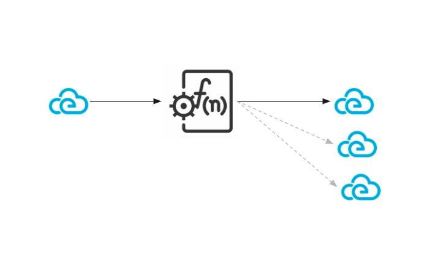
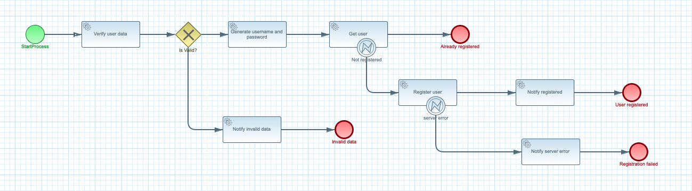
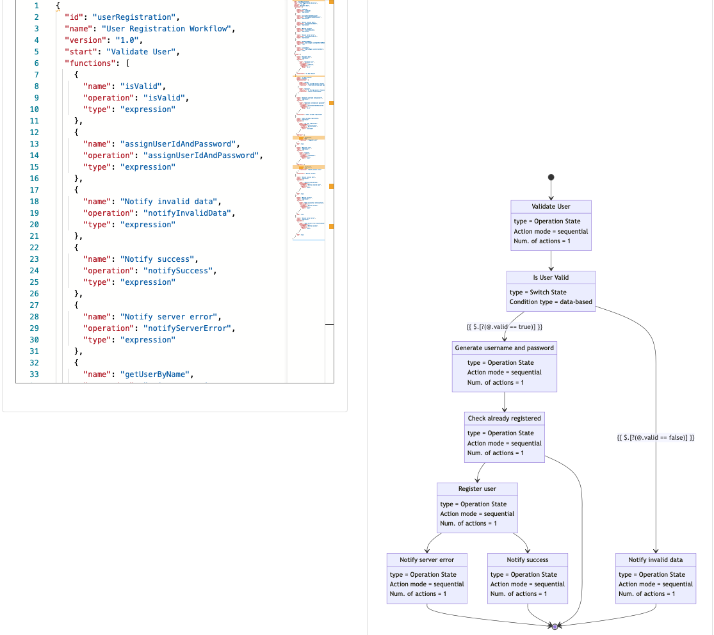

Workflow as a Function Flow with Automatiko¶
Author: Maciej Swiderski, Software Engineer @ OpenEnterprise
Various organisations started to look into serverless as a way of building business logic that can take advantage of the cloud. As it might look at first, it's not an easy task to rely strictly on functions that represent independent logic pieces. There is a risk of losing the big picture and by that not having full control over day-to-day operations.
Knative provides a great foundation to build upon when thinking about serverless, functions and events. Knative Eventing especially shines thanks to its integration with Cloud Events and various broker implementations that provide different characteristics from event delivery standpoint.
At the same time, workflows in various formats have been seen as a good way to express business logic that enables understanding of the big picture. Combining both workflows and Knative Eventing is the main topic of this article.
Workflow as a function flow¶
Workflows date from the Service Oriented Architecture (SOA) times, when standards such as BPEL and then BPMN were introduced. Various vendors started to build platforms that were built around the workflow concepts, often called Process Management Suites or Business Process Management (BPM).
These platforms are often big, centralised servers that aim to orchestrate all other systems in a standardised way. This turned out to be too complex to bring value, and in many cases is referred as traditional BPM, which is already outdated, although these are still in use today.
Newer approaches make workflows completely distributed, so that each activity of the workflow runs as separate container.
This bring us to the concept of workflow as a function flow, which allows users to model the business logic as completely as possible. Users can define the business use case from the beginning until the end, and take advantage of capabilities of serverless platforms like Knative. That means that at runtime the workflow logic will be executed as a set of functions that are:
- self contained - focus on the “one” aspect of the business logic
- independent - they rely on data given to execute logic defined and return outputs regardless if they were dealing with same instance or a different one
- invokable at any time - can be invoked at any time meaning that they do not have to always start from the beginning of the workflow as they simply react to incoming events based on the correlation attributes (Cloud Event type attribute)
- scalable - as functions can be scaled up and down easily to adopt to demands

Workflow as Function FlowAutomatiko project delivers implementation of this concepts that takes advantage of Knative Eventing, Cloud events and workflow definitions to provide way of building your service as complete business use case but execute it as function flow that is controlled by the workflow definition but invoked by published events.
Automatiko supports following types of workflows
Slicing workflow into functions¶
Functions are built based on executing activities that can change workflow state and data. Such activities will then represent a particular fragment of business logic that will be encapsulated as function.
Executing activities can:
- be single activity
- include other activities to control logic
- be combined with other executing activities to form continuation
Functions are named automatically based on workflow or activity names or explicitly by user using custom attributes.
Each function then becomes a dedicated entry point, which:
- has input that is built based on workflow data
- can produce one or more outputs
- has a Knative trigger associated

Slice workflow into functions
Inputs and outputs as Cloud Events¶
After the functions are derived from the workflow, they will always have one event as input, and can produce one or more events as outputs. The logic defined in the workflow and actual data context of a particular workflow instance drives the number of events produced.
Regardless of whether the event is an input or output:
- it is built based on data objects defined in the workflow
- it is filed automatically based on execution context
- it uses type attribute as link to function
- it uses source attribute as identifier of the function being executed including unique identifier of workflow instance for correlation purposes

Inputs and outputs as eventsFunctions always exchange events through the Knative Eventing broker. They never call each other directly, which ensures that they are completely decoupled and event driven. This allows for greater scalability, as each function call can be handled by another replica of the service.
Deployment¶
The heavy work that requires parsing workflow definition, slicing that into functions and events, and packaging this in to a deployable unit, is done at build time.
The Automatiko project implements this concept. It is a java based implementation that takes advantage of GraalVM to compile into a native executable, which has a small memory footprint at runtime and lightning fast startup time.
Workflow as a function flow with Automatiko compiles into single service and by that into a single container image, that includes all the functions. Each and every function can be invoked at any time on any replica of the service.
At the same time during build, a Knative manifest file is generated to ease deployment to the cluster. The Knative manifest file consists of:
- a Knative serving service
- a sink binding to inject broker location
- triggers for each function created out of the workflow
This serves as a starting point to have fully runnable service directly after build. It can be modified further to adopt to particular configuration of Knative in the cluster.
User registration example¶
This example shows a simple user registration that performs various checks and registers the user in the Swagger PetStore service.
You can see more information about this example in the Automatiko documentation.
This example comes with two flavours, depending which DSL is used to create the workflow definition:

BPMN
Serverless Workflow SpecTo try out the example yourself, clone one of the flavours of this example project:
- User Registration BPMN
- User Registration Serverless Workflow
- User Registration BPMN on Google Cloud Run
After you have cloned the project, build the application by running the following command in the cloned repository:
mvn clean package -Pcontainer-native
This command builds a container with the service that is using native executable built with GraalVM. The build process might take a while.
Push built container to registry¶
After the container image is built, push it to an external registry that your Knative cluster can pull from.
Deploy to Knative cluster¶
-
Create a Knative eventing broker, for example by using following command:
kubectl apply -f - << EOF apiVersion: eventing.knative.dev/v1 kind: broker metadata: name: default namespace: knative-eventing EOFComplete deployment file is generated as part of the build and can be found in
target/functions/user-registration-{version}.yaml. To deploy it issue following command:kubectl apply -f target/functions/user-registration-{version}.yamlThis will provision complete service and all the Knative Eventing triggers. In addition it will also create sink binding to make the service an event source to be able to publish events from function execution.
-
Optionally deploy
cloudevents-playerthat will display all events flowing through the broker with following commandskubectl apply -n knative-eventing -f - << EOF apiVersion: serving.knative.dev/v1 kind: Service metadata: name: cloudevents-player spec: template: metadata: annotations: autoscaling.knative.dev/minScale: "1" spec: containers: - image: quay.io/ruben/cloudevents-player:latest env: - name: PLAYER_MODE value: KNATIVE - name: PLAYER_BROKER value: default --- apiVersion: eventing.knative.dev/v1 kind: Trigger metadata: name: cloudevents-player annotations: knative-eventing-injection: enabled spec: broker: default subscriber: ref: apiVersion: serving.knative.dev/v1 kind: Service name: cloudevents-player EOF -
Get the url of the default broker use following command
kubectl get broker default -
Send request to the broker to start user registration
curl -v "http://broker-ingress.knative-eventing.svc.cluster.local/knative-eventing/default" \ -X POST \ -H "Ce-Id: 1234" \ -H "Ce-Specversion: 1.0" \ -H "Ce-Type: io.automatiko.examples.userRegistration" \ -H "Ce-Source: curl" \ -H "Content-Type: application/json" \ -d '{"user" : {"email" : "mike.strong@email.com", "firstName" : "mike", "lastName" : "strong"}}'This will go by number of events being exchanged over the Knative broker and invoking functions defined in the workflow. It also uses Swagger Petstore REST API, so in case of successful user registration it will be visible in Swagger Petstore as new user.
Note
That Swagger Petstore does not have reliable storage thus it might require few get requests to be issued to see it there.
Clean up¶
To clean up, execute following command
kubectl delete -f target/functions/user-registration-1.0.0.yaml
Build the service as container image for Google Cloud Run¶
To be able to use the same service for Google Cloud Run there are two additional steps required
-
Add dependency to
pom.xml<dependency> <groupId>io.automatiko.extras</groupId> <artifactId>automatiko-gcp-pubsub-sink</artifactId> </dependency> -
Add two properties to
src/main/resources/application.propertiesfilequarkus.automatiko.target-deployment=gcp-pubsub quarkus.google.cloud.project-id=CHANGE_MENote
Remember to change
CHANGE_MEto actual project id of your Google Cloud project -
Build the application with following maven command
mvnw clean package -Pcontainer-nativeThis command builds a container with the service that is using native executable built with GraalVM. The build process might take a while.
Push built container to Google Cloud Container registry¶
When container image is built push it to Google Cloud Container registry that Google Cloud Run can pull from.
Deploy to Google Cloud Run with PubSub¶
Once the build and push is completed, complete scripts are generated as part of the build and can be found in target/scripts. To deploy it, login to Google Cloud Console (or use terminal with gcloud installed) where gcloud tool can be used and issue all commands from deploy-user-registration-gcp-cloudrun-{version}.txt
The script content will be similar to following
gcloud pubsub topics create io.automatiko.examples.userRegistration.registrationfailed --project=CHANGE_ME
gcloud pubsub topics create io.automatiko.examples.userRegistration.notifyservererror --project=CHANGE_ME
gcloud pubsub topics create io.automatiko.examples.userRegistration.userregistered --project=CHANGE_ME
gcloud pubsub topics create io.automatiko.examples.userRegistration.notifyregistered --project=CHANGE_ME
gcloud pubsub topics create io.automatiko.examples.userRegistration.registeruser --project=CHANGE_ME
gcloud pubsub topics create io.automatiko.examples.userRegistration.invaliddata --project=CHANGE_ME
gcloud pubsub topics create io.automatiko.examples.userRegistration.generateusernameandpassword --project=CHANGE_ME
gcloud pubsub topics create io.automatiko.examples.userRegistration.alreadyregistered --project=CHANGE_ME
gcloud pubsub topics create io.automatiko.examples.userRegistration.getuser --project=CHANGE_ME
gcloud pubsub topics create io.automatiko.examples.userRegistration --project=CHANGE_ME
gcloud eventarc triggers create notifyservererror --event-filters="type=google.cloud.pubsub.topic.v1.messagePublished" --destination-run-service=user-registration-gcp-cloudrun --destination-run-path=/ --transport-topic=io.automatiko.examples.userRegistration.notifyservererror --location=us-central1
gcloud eventarc triggers create notifyregistered --event-filters="type=google.cloud.pubsub.topic.v1.messagePublished" --destination-run-service=user-registration-gcp-cloudrun --destination-run-path=/ --transport-topic=io.automatiko.examples.userRegistration.notifyregistered --location=us-central1
gcloud eventarc triggers create registeruser --event-filters="type=google.cloud.pubsub.topic.v1.messagePublished" --destination-run-service=user-registration-gcp-cloudrun --destination-run-path=/ --transport-topic=io.automatiko.examples.userRegistration.registeruser --location=us-central1
gcloud eventarc triggers create generateusernameandpassword --event-filters="type=google.cloud.pubsub.topic.v1.messagePublished" --destination-run-service=user-registration-gcp-cloudrun --destination-run-path=/ --transport-topic=io.automatiko.examples.userRegistration.generateusernameandpassword --location=us-central1
gcloud eventarc triggers create getuser --event-filters="type=google.cloud.pubsub.topic.v1.messagePublished" --destination-run-service=user-registration-gcp-cloudrun --destination-run-path=/ --transport-topic=io.automatiko.examples.userRegistration.getuser --location=us-central1
gcloud eventarc triggers create userregistration --event-filters="type=google.cloud.pubsub.topic.v1.messagePublished" --destination-run-service=user-registration-gcp-cloudrun --destination-run-path=/ --transport-topic=io.automatiko.examples.userRegistration --location=us-central1
gcloud run deploy user-registration-gcp-cloudrun --platform=managed --image=gcr.io/CHANGE_ME/user/user-registration-gcp-cloudrun:1.0.0 --region=us-central1
Note
CHANGE_ME will be replaced with the Google Cloud project id configured in src/main/resources/application.properties during the build.
This provisions all required components such as:
- PubSub Topics
- Eventarc Triggers
- Service deployment
Run the service on Google Cloud Run¶
After the service is deployed you can publish first message. For example, by using Google Console with the following io.automatiko.examples.userRegistration topic:
{"user" : {"email" : "mike.strong@email.com", "firstName" : "mike", "lastName" : "strong"}}
This goes by the number of events being exchanged over the Google Cloud PubSub topics and invoking functions defined in the workflow.
Summing up¶
Workflow as a function flow implements common scenario for serverless usage where individual functions build up a complete business case. It allows you to use a workflow to design complete business logic and then slice it into functions that are composed into a function flow, based on the actual logic defined by the workflow definition. Yet each function can be invoked at anytime making the workflow to act as a blueprint that can start at any place and continue according to defined flow of functions.
Workflow as a function flow takes advantage of Knative Eventing as the backbone of the communication to enable:
- Scalability as each function is invoked by using the Knative broker.
- All data exchange is done with Cloud Events.
- Flexibility with regard to which point in the workflow definition instance should be started.
- Use "listen to yourself" principle to avoid long running actions impacting overall performance.
At the same time it is simple in deployment as it relies on single service and automatically defined triggers to integrate with Knative broker.
Links/references¶
Workflow as a function flow has been presented at Knative Community Meetup, so if you are interested in more details please have a look

- Source code for code examples in this post
- Automatiko website
- Workflow as a Function Flow docs